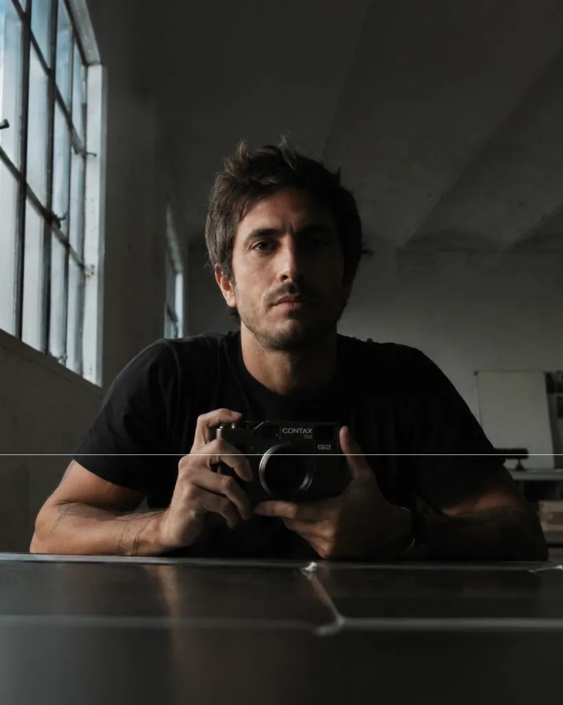
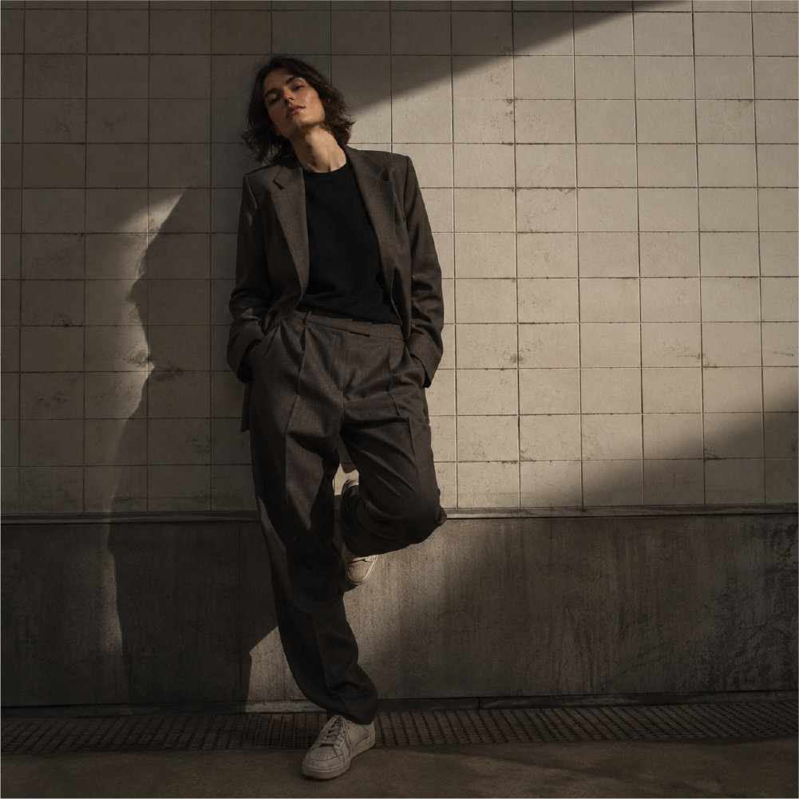
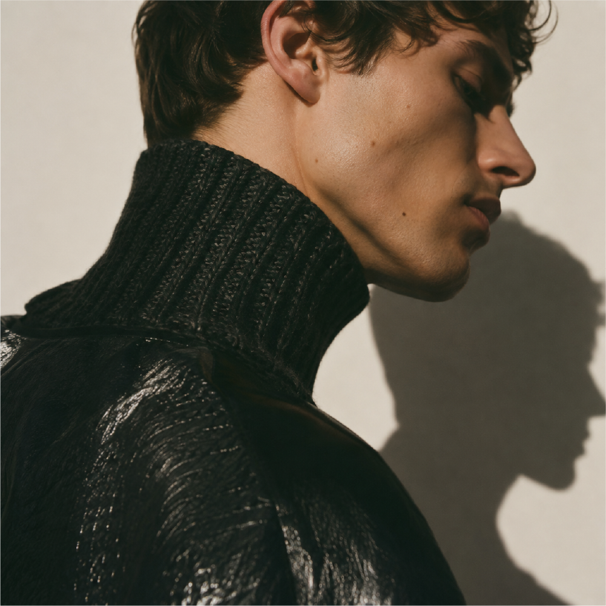
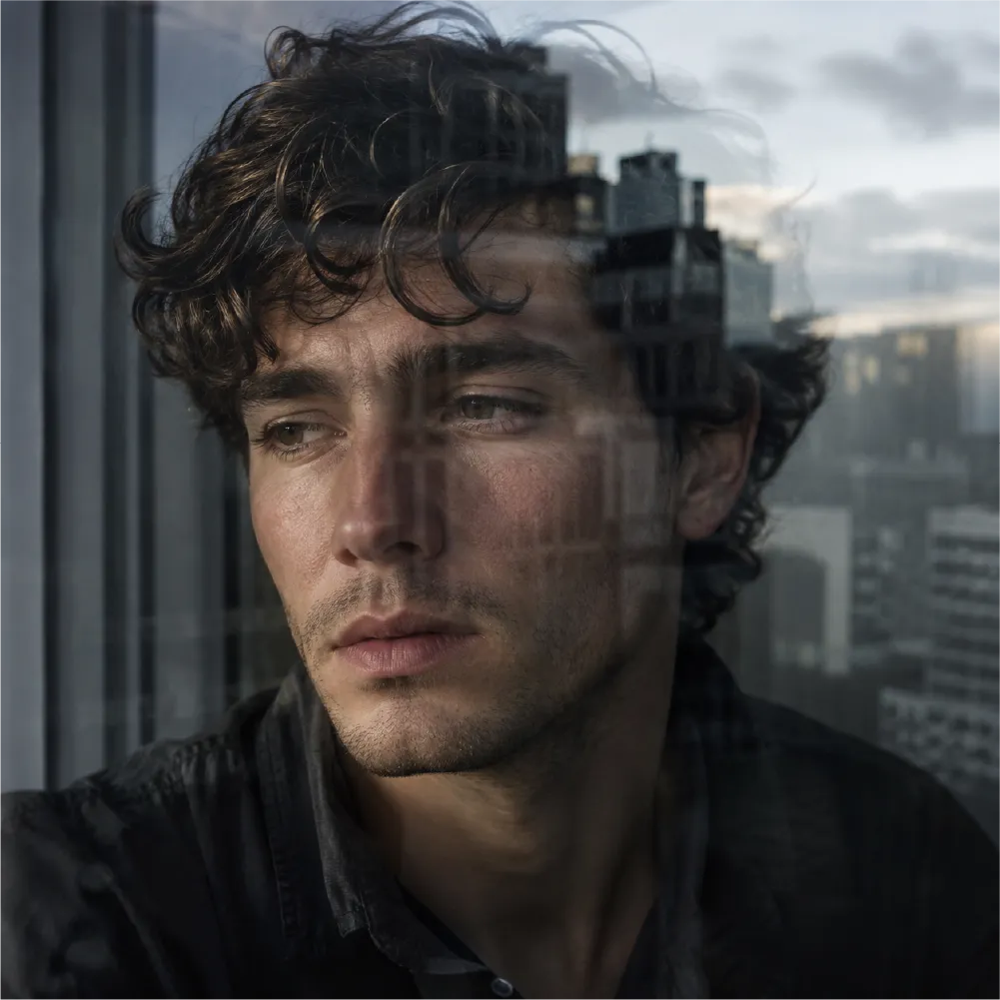
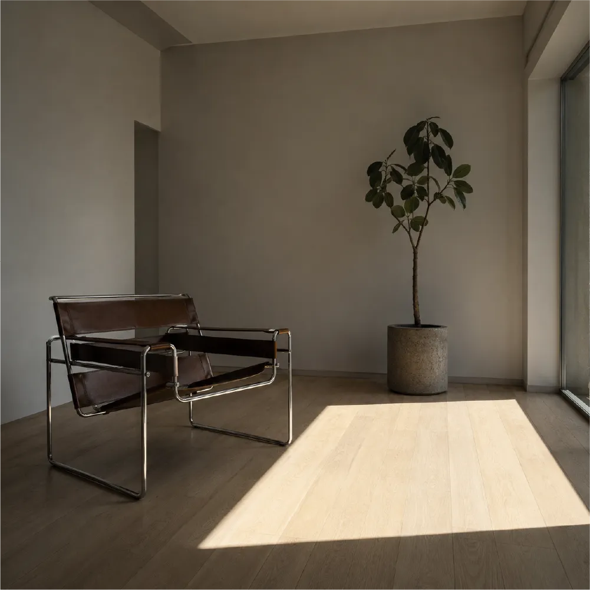
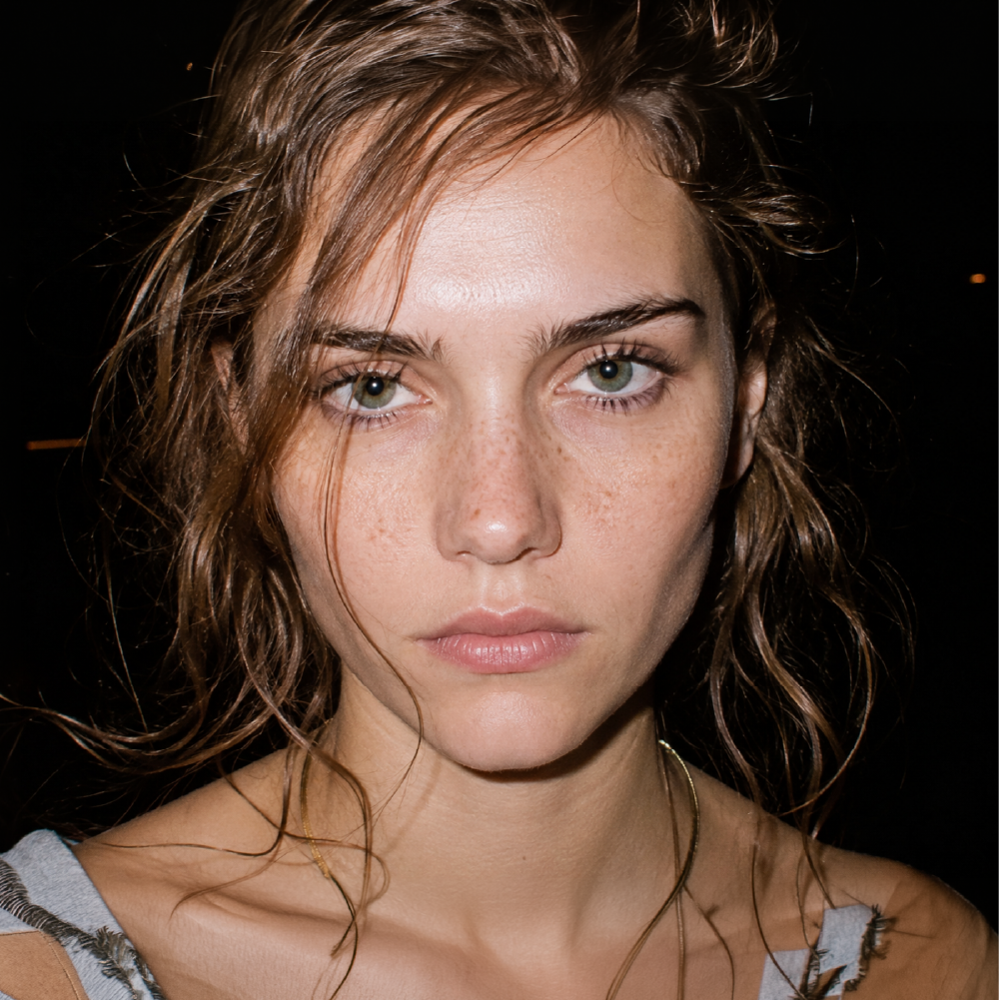

Luz a través del Cristal ↗
Retrato contemplativo con reflejos tenues de la arquitectura urbana fundidos suavemente sobre el rostro.
Fotógrafo especializado en retratos, moda y fotografía editorial. Trabajo con personas, marcas y proyectos que buscan imágenes con identidad en Rosario y todo el país.

Retrato contemplativo con reflejos tenues de la arquitectura urbana fundidos suavemente sobre el rostro.

Sastrería contemporánea sobre cuerpo femenino, pose descontracturada y juego de luces duras contra azulejos.

Encuadre cerrado de moda. Cuello de lana gruesa y vinilo brillante donde la luz lateral modela el tejido sobre fondo neutro.

Atmósfera documental en penumbra, copas, risas espontáneas y luz puntual de tungsteno cálida.

Composición minimalista de interior. El sillón tubular de cuero y el haz de luz solar sobre el parquet crean un espacio de calma.

Fachada contemporánea en hormigón visto y cristal cortada por una sombra diagonal escultórica.

Retrato frontal con flash nítido, textura de piel real sin artificios, mirada penetrante y honestidad gestual.
Fotógrafo especializado en retratos, moda y fotografía editorial. Trabajo con personas, marcas y proyectos que buscan imágenes con identidad en Rosario y todo el país.
Mi trabajo parte de una idea simple: una buena fotografía no solo muestra, también comunica una mirada. Busco construir imágenes que tengan carácter, cuidando la luz, la composición, los gestos y el contexto de cada persona o proyecto. Me interesa trabajar de manera cercana y explorar en cada sesión una estética que se sienta auténtica, contemporánea y propia.
A lo largo de mi trayectoria trabajé en proyectos editoriales, campañas y retratos, colaborando con personas y marcas que entienden la fotografía como una herramienta para construir identidad.
Trabajo con personas, marcas y proyectos en sesiones de autor, campañas y fotografía editorial.